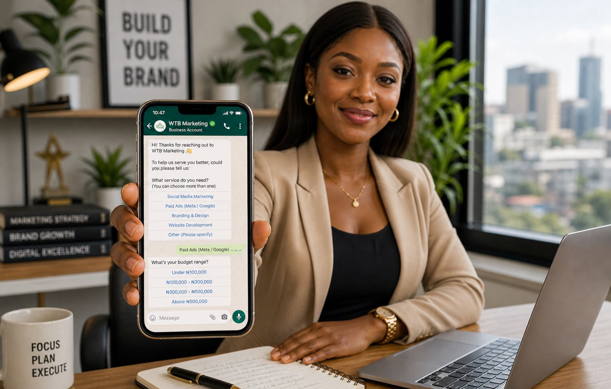

Automate the repetitive parts of WhatsApp sales—greeting, FAQs, requirement collection, lead qualification and reminders—but keep a clear human handoff for trust, negotiation, complaints and high-value decisions.
Why WhatsApp automation matters for Nigerian businesses
For many Nigerian businesses, WhatsApp is where interest becomes a real conversation. Customers ask about price, availability, location, delivery, timelines and payment. The problem is not a lack of enquiries. It is that the process often depends on one person remembering to reply to everyone.
That is why local providers are positioning WhatsApp systems around instant replies, lead qualification, appointment booking and follow-up. Harzotech’s Nigeria WhatsApp automation overview reflects the same commercial use cases.
The human touch is not the part to automate
Customers do not want to feel trapped in a maze of buttons. Automation should remove waiting and repetition, not remove care. A good system answers what it knows, asks useful questions, shows the customer what happens next and quickly brings in a person when the conversation needs judgement.

What to automate first
1. The first response
Confirm that the message was received, set expectations and ask the first useful question instead of sending a lifeless “Hello.â€
2. Common questions
Give accurate, approved answers for products, locations, opening hours, delivery, basic pricing guidance and next steps.
3. Lead qualification
Collect the details your sales team needs: what the person wants, their location, timing, budget range and how they prefer to proceed.
4. Follow-up
Remind the customer politely when they asked for more information, abandoned a booking or said they needed time.
What should never be left entirely to automation?
- Complaints, refunds and sensitive issues
- Negotiation or unusual requests
- High-value purchases
- Medical, legal or financial decisions
- Any message the system cannot answer confidently
How WTB builds the system
WTB starts with your real customer journey—not a generic bot script. We map your traffic sources, questions, offers, qualification rules, human handoffs, response tone and reporting needs. Then we help connect the right workflow to your marketing, website, ads and follow-up process.
The goal is not to make your business sound automated. It is to make sure a serious customer is seen, understood and moved to the right next step.
Stop losing good enquiries
Let WTB design your WhatsApp lead workflow.
Tell us where conversations slow down or disappear. We will show you what to automate and what should stay human.
Related reading: WhatsApp AI for Nigerian businesses and AI agent consulting.